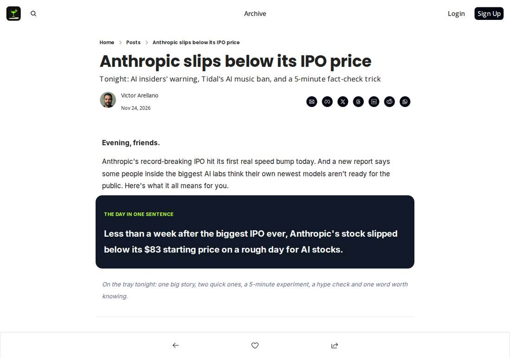

Anthropic Slides Below Its $83 IPO Price
Anthropic shares closed at $81.91 on November 24, 2026, down 6.54% and below the company's $83 IPO price, less than a week after its record-breaking debut on November 19, when the stock opened near $111.50 and closed its first day at $97.17. On November 20 the shares closed at $88.30, still above the IPO price. The fall was part of a broader AI selloff: Nvidia dropped about 6%, and Dell and Hewlett Packard Enterprise fell sharply despite beating earnings. Equiti attributed the pressure to concerns over elevated AI capital expenditure, the prospect of heightened regulatory scrutiny under a Democratic-led US Congress, and uncertainty around Nvidia. Anthropic has not yet reported quarterly results as a public company.

- 01THE PRICING — November 18, 2026: Anthropic prices its IPO at $83 a share, above its $70 to $78 range, in the largest IPO on record at about $93.5 billion including the greenshoe.
- 02THE DEBUT — November 19, 2026: Anthropic debuts on the Nasdaq, opening near $111.50, about 34% above the IPO price, and closing its first day at $97.17, up 17%.
- 03THE FADE — November 20, 2026: Anthropic closes at $88.30, still above the $83 IPO price, as the shares slide for a second session and the greenshoe is fully exercised.
WHAT HAPPENEDWhat Happened
Anthropic shares closed at $81.91 on November 24, 2026, down 6.54% on the day and below the company's $83 initial public offering price. The close came less than a week after Anthropic's record-breaking market debut on November 19, when the stock opened around $111.50, about 34% above the IPO price, and closed its first day at $97.17, up 17%. On November 20 the shares closed at $88.30, still above the $83 IPO price; the slide since then has erased the debut gains and taken the stock under water for IPO buyers.
The fall was part of a broader selloff in AI stocks rather than a company-specific event. Nvidia fell about 6% in the same session, giving back part of its 31% jump after Jensen Huang's reinstatement, and Dell and Hewlett Packard Enterprise shares fell sharply despite beating earnings expectations. Anthropic was not alone among AI names, but it was the only one of the group to cross below its IPO price.
Equiti attributed the pressure to concerns over elevated capital expenditure across the AI industry, the prospect of heightened regulatory scrutiny under a Democratic-led US Congress, and market uncertainty around developments at Nvidia, including questions over the independence of its board after Huang's return. Anthropic's debut had reflected investor optimism about its large language models and strategic position; the subsequent decline reflects a reassessment of how quickly that optimism converts into profitability.
WHY IT MATTERSThe IPO premium lasted four sessions.
Anthropic priced its IPO at $83 a share on November 18, above its $70 to $78 range, in what became the largest IPO on record at about $93.5 billion including the greenshoe. The stock's first-day pop to $97.17 and intraday high near $111.50 looked like a validation of the AI trade. Five sessions later the shares are below the price at which the company sold them, a fast round trip that says more about the market's mood on AI spending than about Anthropic's business, which has not reported quarterly results as a public company yet.
The speed of the reversal is the signal. A stock that falls below its IPO price within a week of the largest listing ever is a market verdict on the whole AI capex story, not a single earnings miss. Dell more than doubled quarterly revenue to $54.94 billion on AI server demand and still fell, which tells the same story from the other side: even beats are not enough while investors question the sustainability of AI spending.
THE SECOND MOVEThe next test is the first quarterly report.
Anthropic has not yet reported results as a public company, so the market is trading on sentiment and sector headlines rather than numbers. The first quarterly report will be the first hard look at whether the company's revenue growth and spending justify a valuation set at the top of a record IPO.
Until then the stock will track the AI trade. The same forces that lifted it on debut, enthusiasm for frontier models and their commercial prospects, are now working in reverse as investors weigh capital expenditure, regulatory scrutiny and governance questions at Nvidia. The Axios report on safety concerns inside OpenAI and Anthropic, published the same day, adds a different kind of pressure: the labs' own researchers questioning whether their most advanced models can ever ship safely.
THE SHIFTWhat Changed
SIGNAL JUDGMENT — ANALYSISThe debut premium is gone; the numbers are next.
A stock falling below its IPO price within a week of the largest listing ever is a fast verdict, and it is a verdict on the AI trade rather than on Anthropic specifically. Nothing about the company's business changed in five sessions; what changed is the market's willingness to pay up for AI growth while questioning capex, regulation and governance at Nvidia. The telling detail is Dell: revenue more than doubled and the stock still fell. When beats do not lift shares, the market is repricing the story, not the quarter. Anthropic's first quarterly report as a public company is now the event that matters, because it will replace sentiment with numbers. Until then the shares will ride the sector's mood, and the mood has turned.
WHAT REMAINS UNCERTAINWhat Remains Uncertain
EVIDENCEEvidence

Anthropic shares closed at $81.91 on November 24, 2026, down 6.54% and below the company's $83 IPO price, less than a week after a record debut that opened near $111.50. The fall came amid a broader selloff in AI stocks, with Nvidia down about 6% and Dell and Hewlett Packard Enterprise falling despite beating earnings.
PRIMARY SOURCESPrimary Sources
- Equiti: AI scrutiny weighs on Anthropic; Dell and HPE fall despite solid earnings
https://www.equiti.com/uae-en/news/market-news/ai-scrutiny-weighs-on-anthropic-dell-and-hpe-fall-despite-solid-earnings/ - KuCoin: Dell Technologies Surpasses Earnings Estimates Despite 11.9% Stock Drop
https://www.kucoin.com/news/flash/dell-technologies-surpasses-earnings-estimates-despite-11-9-stock-drop - AI Nightcap: Anthropic slips below its IPO price
https://ainightcap.beehiiv.com/p/anthropic-slips-below-its-ipo-price-65bd